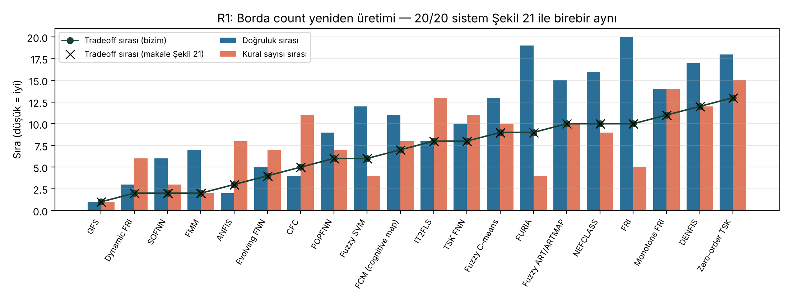
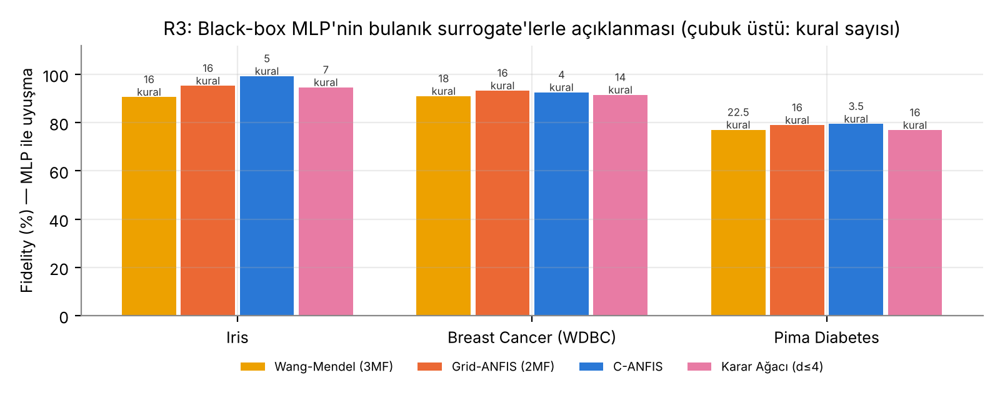
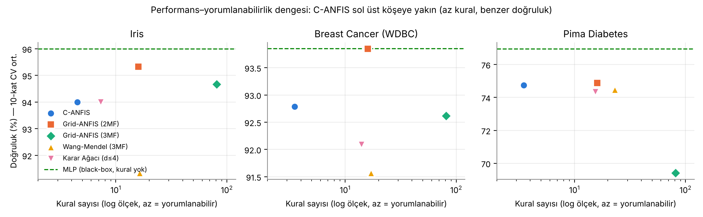
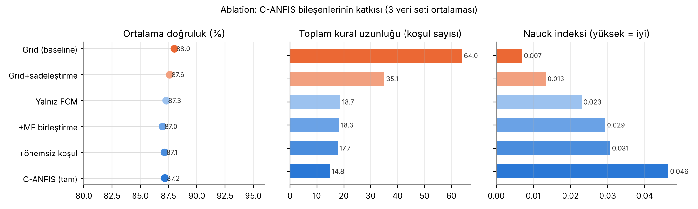
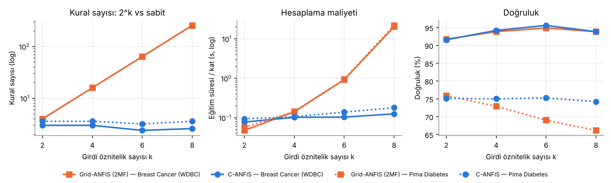
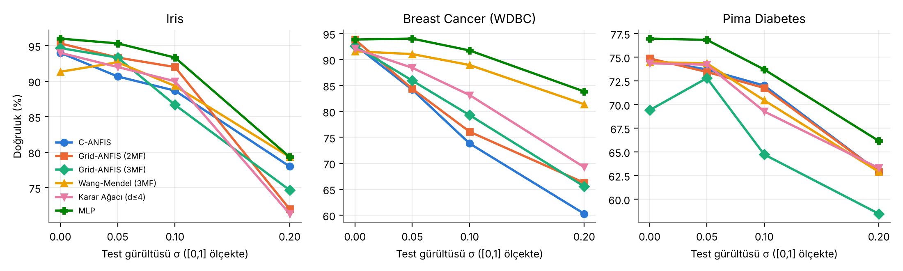
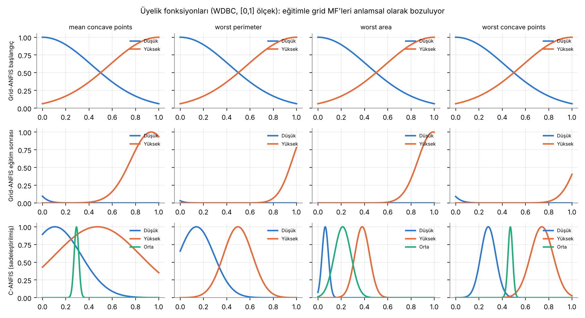

Furkan Fuat Küçükbayrak (1306230124) — İstanbul Üniversitesi-Cerrahpaşa, Bilgisayar Mühendisliği
Bulanık Mantık Dersi Dönem Projesi, 2026–2027 Güz · Ders sorumlusu: Tolgahan Öztürk
Referans çalışma: H. Ouifak, A. Idri, Neurocomputing 647 (2025) 130602 [1]
Derin öğrenme ve diğer kara kutu MÖ modelleri tıp, finans ve otonom sistemler gibi kritik alanlarda yüksek doğruluk sağlamakla birlikte, kararlarının gerekçesini insanlara açıklayamamaları güven ve denetlenebilirlik açısından ciddi bir engeldir [1], [2]. Açıklanabilir yapay zekâ (XAI) bu boşluğu doldurmayı amaçlar; ancak "yorumlanabilirlik" kavramının kendisi tartışmalıdır ve ortak bir ölçütü yoktur [3], [4]. Bulanık mantık [5] bu noktada doğal bir araçtır: "EĞER glikoz yüksek VE BMI yüksek İSE diyabet riski yüksek" biçimindeki dilsel kurallar, sayısal bir modelin davranışını alan uzmanının okuyabileceği bir dile çevirir. Ouifak ve Idri [1], BM'nin MÖ yorumlanabilirliğindeki kullanımını iki ana yol üzerinden sınıflandırır: (1) kara kutudan bulanık kural çıkarımı ve (2) sinir ağlarının öğrenme gücünü bulanık çıkarımla birleştiren nöro-bulanık modelleme (özellikle ANFIS [6]).
Problem. Derleme, ANFIS'in en çok çalışılan ve dengeli teknik olduğunu raporlarken, aynı tekniğin grid-partition yapısında kural sayısının girdi sayısıyla üstel (pd) büyüdüğünü, bunun da hem yorumlanabilirliği hem de hesaplama maliyetini olumsuz etkilediğini vurgular (Bölüm 9.1, 12). Ayrıca yorumlanabilirliği yalnızca kural sayısıyla ölçmenin yetersizliğine ve yeni metrik ihtiyacına dikkat çeker [1], [7].
Amaç ve kapsam. Referans çalışma bir derleme olduğundan, Minimum Yeniden Gerçekleştirme Gereksinimi (MRR) şu şekilde tanımlanmıştır: (R1) derlemenin nicel performans–yorumlanabilirlik analizinin (Tablo 6, Tablo 9, Şekil 21) yeniden üretilmesi; (R2) derlemenin merkezî tekniği olan ANFIS'in sıfırdan gerçekleştirilip derlemede sık geçen benchmark veri setlerinde değerlendirilmesi ve sonuçların derlemedeki medyanlarla karşılaştırılması; (R3) bulanık modellerin kara kutu bir sinir ağını açıklamada kullanılması ve derlemenin tanımladığı fidelity ölçütüyle (Denk. 25) değerlendirilmesi. Özgün katkı olarak derlemenin belirttiği sınırlılıklara doğrudan yanıt veren C-ANFIS geliştirilmiş ve kontrollü deneylerle baseline'a karşı sınanmıştır. Tüm kod, veri ve sonuçlar GitHub deposunda tekrar üretilebilir biçimde paylaşılmıştır.
Derlemeler. Gacto vd. [7] dilsel bulanık kural tabanlı sistemlerde yorumlanabilirlik ölçütlerini karmaşıklık-tabanlı (kural/MF/koşul sayısı) ve anlamsal-tabanlı (ayırt edilebilirlik, kapsama, tutarlılık) olarak ikiye ayırır; bu ayrım projemizdeki metrik seçimine temel oluşturur. Alonso vd. [8] bulanık sistem yorumlanabilirliğinin kavramsal çerçevesini ve doğruluk–yorumlanabilirlik ödünleşimini tartışır. Das vd. [9] bulanık derin sinir ağlarını topluluk, paralel ve sıralı modeller olarak sınıflandırır; De Campos Souza [10] bulanık ve nöro-bulanık ağların tarihsel gelişimini ve eğitim yöntemlerini özetler. Ouifak ve Idri [1] ise bunlardan farklı olarak 330 çalışmayı sistematik biçimde haritalayıp nicel bir performans–yorumlanabilirlik karşılaştırması yapan ilk kapsamlı SLR'dir.
Kara kutudan bulanık açıklama. Aghaeipoor vd. [11] derin sinir ağları için yerel ve global düzeyde bulanık kural tabanlı açıklayıcılar önermiş ve %90'ın üzerinde fidelity raporlamıştır. Yin, Lam ve Watson [12] modelden bağımsız (model-agnostic) hiyerarşik bulanık açıklama çerçevesi geliştirmiştir. Bu çalışmalar, LIME [13] ve SHAP [14] gibi genel XAI yöntemlerinin aksine açıklamayı doğrudan dilsel kurallarla verir. Kara kutu davranışını taklit eden vekil modellerin değerlendirilmesinde fidelity ölçütü Craven ve Shavlik'in [15] pedagojik kural çıkarımı yaklaşımına dayanır.
Kompakt ve yorumlanabilir nöro-bulanık modeller. Kural patlamasına karşı Huang vd. [16] FCM tabanlı derin yama öğrenmesiyle kural sayısını azaltmış; Fuchs vd. [17] çok amaçlı optimizasyonla öznitelik ve kural sayısını birlikte küçültmüştür. Ouifak ve Idri [18] Mamdani ve TSK tabanlı nöro-bulanık sistemleri tıbbi tanıda kural ve MF sayısı üzerinden karşılaştırmış; Pekaslan vd. [19] performans ve yorumlanabilirliğin birlikte elde edilip edilemeyeceğini incelemiştir. Cui, Wu ve Xu [20] yüksek boyutta TSK ağlarında ateşleme kuvvetlerinin doygunluğa ulaşmasını ("boyut laneti") açıklamış, Wu vd. [21] TSK sistemlerinin sinir ağları ve uzmanlar karışımıyla fonksiyonel denkliğini göstermiştir. Kural tabanı sadeleştirmede Setnes vd. [22] benzer bulanık kümelerin birleştirilmesini, Chiu [23] ise kümeleme tabanlı model tanımlamayı önermiştir. Nauck [24] karmaşıklık, kapsama ve bölümleme bileşenlerini tek bir indekste birleştirmiştir.
Tablo 1. İlgili çalışmaların karşılaştırmalı özeti
| Çalışma | Yöntem | Yorumlanabilirlik ölçütü | Projeyle ilişkisi |
|---|---|---|---|
| Jang [6] (1993) | Grid ANFIS, hibrit öğrenme | — | Baseline'ın kendisi |
| Setnes vd. [22] (1998) | Benzerlik ile MF birleştirme | MF sayısı | C-ANFIS adım (3) |
| Nauck [24] (2003) | İndeks: comp×cov×part | Bileşik indeks | Önerilen ek metrik |
| Gacto vd. [7] (2011) | Derleme / taksonomi | Karmaşıklık + anlamsal | Metrik çerçevesi |
| Huang vd. [16] (2022) | FCM + yama öğrenme | Kural sayısı | FCM ile kural üretimi fikri |
| Aghaeipoor vd. [11] (2023) | DNN için bulanık açıklayıcı | Fidelity, kural sayısı | R3 surrogate deneyi |
| Ouifak & Idri [1] (2025) | SLR, 330 çalışma | Kural sayısı, Borda | Referans çalışma |
| Yin vd. [12] (2025) | Hiyerarşik model-agnostik | Fidelity | Güncel açıklayıcı örneği |
Bulanık küme ve üyelik fonksiyonu. Klasik kümede bir eleman ya kümeye aittir ya değildir; Zadeh'in [5] bulanık kümesinde ise üyelik μA(x) ∈ [0, 1] arasında derecelidir. Projede Gauss MF kullanılmıştır: μ(x) = exp(−(x−c)²/(2σ²)); burada c merkez, σ genişliktir. Gauss MF türevlenebilir olduğu için gradyan tabanlı öğrenmeye uygundur. Wang–Mendel referans modelinde eşit aralıklı üçgen MF'ler kullanılmıştır.
Dilsel değişken ve bulanıklaştırma. "worst area" gibi bir sayısal girdi, {Düşük, Orta, Yüksek} gibi dilsel terimlerle tanımlanır; bulanıklaştırma (fuzzification), kesin bir girişin her terime ait üyelik derecesini hesaplamaktır.
Kural tabanı ve çıkarım. Mamdani [25] sisteminde hem öncül hem sonuç bulanık kümedir ve sonuç durulaştırma (ör. ağırlık merkezi) ile kesin değere çevrilir. Takagi–Sugeno–Kang (TSK) [26] sisteminde sonuç, girdilerin bir fonksiyonudur. Birinci dereceden TSK kuralı: Rr: EĞER x1 Ar1 VE … VE xd Ard İSE fr = pr0 + pr1x1 + … + prdxd. VE operatörü için çarpım t-normu kullanılır. TSK'da durulaştırma, kural çıktılarının ateşleme kuvvetleriyle ağırlıklı ortalamasıdır.
ANFIS. Jang'ın [6] ANFIS'i TSK sistemini beş katmanlı bir uyarlanabilir ağ olarak ifade eder:
Öncül (MF) parametreleri doğrusal olmayan, sonuç parametreleri ise y'de doğrusaldır. Bu yapı hibrit öğrenmeye olanak tanır: ileri geçişte öncüller sabitken sonuç parametreleri en küçük kareler (LSE) ile kapalı biçimde çözülür; geri geçişte sonuçlar sabitken MF parametreleri gradyan inişiyle güncellenir [6].
Fuzzy C-Means (FCM). Bezdek'in [27] FCM algoritması, her veri noktasının birden çok kümeye uik ∈ [0,1] derecesiyle ait olduğu, Jm = ΣiΣk uikm‖xk−vi‖² amaç fonksiyonunu en küçükleyen yumuşak kümelemedir. Küme merkezleri vi ve bulanık standart sapmalar doğrudan Gauss MF parametrelerine dönüştürülebilir [23].
Yorumlanabilirlik ölçütleri. [1]'de en sık kullanılan ölçüt kural sayısıdır (296 çalışma); bunu MF sayısı, fidelity ve kural uzunluğu izler. Fidelity, vekil modelin kara kutuyla aynı etiketi verdiği örneklerin yüzdesidir (Denk. 2). Nauck indeksi [24] üç bileşenin çarpımıdır (Denk. 3): comp = m/Σrnr (m: sınıf sayısı, nr: kural r'deki koşul sayısı), covi = ortalama ĥi(x) (hi = Σkμk; h ≤ 1 ise ĥ = h, aksi hâlde ĥ = (pi−h)/(pi−1)) ve parti = 1/(pi−1). Ayırt edilebilirlik ise aynı öznitelikteki MF çiftlerinin en büyük Jaccard benzerliğinin (|A∩B|/|A∪B|) 1'den farkıdır [7], [22].
Derlemede adı geçen diğer kavramlar (Tip-2/Tip-3 bulanık mantık, evrimsel nöro-bulanık ağlar) bu projenin deney kapsamında değildir; Tip-2 sistemler ek belirsizlik modellemesi karşılığında daha yüksek kural sayısına (medyan 40) sahiptir [1].
Ouifak ve Idri [1], Kitchenham yönergelerine dayanan bir sistematik haritalama/derleme protokolü uygulamıştır: altı dijital kütüphanede (IEEE Xplore, ScienceDirect, PubMed, ACM DL, Wiley, Google Scholar) arama yapılmış, dahil etme/dışlama ve kalite değerlendirmesi kriterleriyle 330 çalışma seçilmiş, veriler 3 haritalama (MQ) ve 8 araştırma sorusu (RQ) üzerinden çıkarılmıştır. Bu bölümde projeyi doğrudan ilgilendiren bulgular özetlenmiştir.
Derlemenin önerdiği referans "sistem", tipik bir nöro-bulanık açıklanabilir sınıflandırıcıdır. Girdiler tablo verisinin öznitelikleri, çıktı ise sınıf etiketidir. Gauss MF'ler, grid-partition kural tabanı ve TSK çıkarımı kullanılır; eğitim hibrit öğrenme ile yapılır. Değerlendirme doğruluk, kural sayısı ve fidelity ile yapılır.
Tablo 6 ve Tablo 9'dan Şekil 21'deki 20 sistemin medyan doğruluk ve medyan kural sayısı değerleri alınmış, sıralama src/borda.py ile yeniden hesaplanmıştır. Şekil 21'deki sıra tablosunun incelenmesi, makalenin bağları farklı ele aldığını göstermiştir. Doğrulukta bağlar keyfi olarak kırılmıştır ("ordinal"; ör. Dynamic FRI ile CFC aynı %93,5 değerine sahipken 3 ve 4. sırayı almıştır). Kural sayısı ve tradeoff sıralarında ise eşit değerler aynı sırayı almış, sonraki sıra atlanmamıştır ("dense"). Bu politika birebir uygulanmıştır.
ANFIS herhangi bir bulanık mantık kütüphanesi kullanılmadan NumPy ile yazılmıştır (src/anfis.py). Uygulamanın önemli noktaları:
Öncül gradyanı, normalizasyonun softmax olduğu gözlemiyle kompakt biçimde türetilmiştir:
Analitik gradyan, merkezi farklarla hesaplanan sayısal gradyanla karşılaştırılmış ve bağıl hata < 10⁻⁵ bulunmuştur (tests/test_anfis.py). Grid başlatmada her öznitelik için p eşit aralıklı Gauss MF yerleştirilmiş, komşu MF'ler 0,5 üyelikte kesişecek biçimde σ = Δ/(2√(2 ln 2)) seçilmiştir. Grid-partition'da kural sayısı pd olduğundan, karşılıklı bilgi (mutual information) ile en bilgilendirici k = 4 öznitelik seçilmiştir. Bu seçim yalnızca eğitim kıvrımında yapılmıştır. Bu ayarla 2 MF için 16 kural elde edilir; bu değer derlemenin ANFIS medyanına (17) çok yakındır.
Referans modeller. Karşılaştırma için şu modeller de aynı kıvrımlarda çalıştırılmıştır:
MLP, standartlaştırılmış tüm özniteliklerle eğitilmiştir (kara kutu). Bulanık vekil modeller ise gerçek etiketler yerine MLP'nin eğitim kümesi tahminleriyle ve yalnızca k = 4 öznitelikle eğitilmiştir. Bu, pedagojik kural çıkarımı yaklaşımıdır [15]. Fidelity, test kümesinde Denk. 2 ile ölçülmüştür.
Gerekçe. Derleme üç sorunu açıkça belirtir: (a) grid ANFIS'te kural patlaması ve ölçeklenebilirlik, (b) yorumlanabilirliğin yalnızca kural sayısıyla ölçülmesi, (c) MF'lerin anlamsal açıklığının korunması ihtiyacı [1], [7]. C-ANFIS bu üç soruna altı adımlı bir boru hattıyla yanıt verir (src/canfis.py):
Ek yorumlanabilirlik metrikleri. Derlemenin "yeni metrik" çağrısına karşılık, kural sayısına ek olarak şu metrikler raporlanmıştır: toplam kural uzunluğu, MF sayısı, Jaccard tabanlı ayırt edilebilirlik ve Nauck indeksi [24]. Ayrıca derlemenin Borda yöntemi Nauck indeksini üçüncü kriter olarak alacak şekilde genişletilmiştir.
Başarı ölçütü (önceden tanımlandı). Önerilen yöntemin başarılı sayılması için iki koşul belirlenmiştir: (i) kural sayısı ve toplam kural uzunluğu baseline'a göre belirgin biçimde azalmalı; (ii) doğruluk farkı 10-kat CV üzerinde Wilcoxon testinde (α = 0,05) baseline aleyhine anlamlı olmamalı. İkincil hedefler ölçeklenebilirlik ve gürültüye dayanıklılıktır.
Veri setleri. Derlemede sık geçen üç tablo verisi kullanılmıştır:
Protokol. 10-kat tabakalı çapraz doğrulama kullanılmıştır (seed = 0). Tüm modeller aynı kıvrımlarda çalıştırılmıştır. MinMax ölçekleme ve MI öznitelik seçimi (k = 4) yalnızca eğitim kıvrımında fit edilmiştir; test değerleri [−0,1, 1,1] aralığına kırpılmıştır. Deneylerin listesi:
Ölçütler. Doğruluk, makro-F1, fidelity, kural sayısı, toplam kural uzunluğu, MF sayısı, ayırt edilebilirlik, Nauck indeksi, eğitim süresi ve örnek başına çıkarım süresi.
Ortam. Python 3.13, NumPy 2.5, SciPy 1.18, pandas 3.0, scikit-learn 1.9 [35] (yalnızca veri bölme, MI, MLP ve karar ağacı için), Matplotlib 3.11 ve Streamlit 1.65 (demo). Donanım: 2 çekirdekli Linux bulut sanal makinesi, GPU yok. Tüm deneyler python run_all.py ile ≈8 dakikada yeniden üretilebilir.
Hesaplanan doğruluk, kural ve tradeoff sıraları Şekil 21 ile 20/20 sistemde birebir eşleşmiştir (Şekil 1). Ancak sıralama bağ politikasına duyarlıdır. Üç ölçütte de tutarlı "min" (standart yarışma sırası) politikası uygulandığında ANFIS 3. sıradan 5. sıraya, "average" ile 4. sıraya düşmektedir. Ayrıca Tablo 9'daki "Fuzzy Rule Interpolation" satırının doğruluk değerleri (4; 20; 11; 11,33; 5,22), Tablo 6'daki aynı sistemin kural sayısı değerleriyle birebir aynıdır. Şekil 20'de FRI'nin medyan doğruluğu ≈11 olarak çizilmiştir; bu, olası bir veri kopyalama hatasına işaret eder.

Tablo 2. Baseline sonuçları (10-kat CV, ort. ± std doğruluk %; k = 4 öznitelik)
| Model | Iris | WDBC | Pima | Kural sayısı |
|---|---|---|---|---|
| Grid-ANFIS (2MF) — baseline | 95,33 ± 4,50 | 93,85 ± 2,23 | 74,87 ± 6,80 | 16 |
| Grid-ANFIS (3MF) | 94,67 ± 5,26 | 92,62 ± 3,18 | 69,40 ± 5,31 | 81 |
| Wang–Mendel (3MF, "sum") | 91,33 ± 4,50 | 91,57 ± 4,66 | 74,48 ± 3,56 | 16–23 |
| Wang–Mendel orijinal ("max") | 91,33 ± 4,50 | 90,15 ± 4,41 | 57,04 ± 17,84 | 16–23 |
| Karar ağacı (d ≤ 4) | 94,00 ± 5,84 | 92,09 ± 3,82 | 74,35 ± 7,30 | 7–16 yaprak |
| MLP (kara kutu, 4 öznitelik) | 96,00 ± 3,44 | 93,85 ± 3,01 | 76,96 ± 5,86 | — |
Grid-ANFIS'in 30 kattaki medyan doğruluğu %92,98, veri seti medyanları ise %93,33 (Iris), %92,98 (WDBC) ve %72,73 (Pima) olmuştur. Kural sayısı 16'dır. Derlemenin ANFIS için raporladığı değerler (medyan %95, aralık %78–99,9; medyan 17 kural) ile uyumludur; Pima'nın düşük değeri derlemedeki alt sınıra (%78) yakındır ve bu veri setinin bilinen zorluğunu yansıtır. 3MF grid (81 kural) hiçbir veri setinde 2MF'yi geçememiştir: kural sayısını 5 kat artırmak, özellikle Pima'da (−5,5 puan) aşırı öğrenmeye yol açmıştır.
Bulanık vekiller MLP'yi Iris'te %90,7–99,3, WDBC'de %91,0–93,3 ve Pima'da %77,1–79,5 fidelity ile taklit etmiştir (Şekil 2). C-ANFIS, 3,5–5 kuralla Iris ve Pima'da en yüksek fidelity'yi (%99,3 ve %79,5), WDBC'de 16 kurallı grid'e yakın bir değeri (%92,6'ya karşı %93,3) elde etmiştir. Pima'daki düşük fidelity, MLP'nin 8 özniteliğe dayanan karar sınırının 4 öznitelikle tam taklit edilememesinden kaynaklanır.

Tablo 3. Baseline (Grid-ANFIS 2MF) ve C-ANFIS — 3 veri seti × 10 kat ortalaması (yönerge 6.2 formatı)
| Performans ölçütü | Baseline | C-ANFIS | Değişim |
|---|---|---|---|
| Accuracy (%) | 88,02 | 87,18 | −0,84 puan (p = 0,152, anlamlı değil) |
| Macro-F1 (%) | 86,70 | 85,88 | −0,82 puan |
| Kural sayısı | 16,0 | 3,83 | −%76,0 |
| Toplam kural uzunluğu (koşul) | 64,0 | 14,8 | −%76,8 |
| MF sayısı | 8,0 | 13,4 | +%67,9 |
| Nauck indeksi | 0,0069 | 0,0462 | ×6,7 |
| Eğitim süresi (s/kat) | 0,121 | 0,100 | −%17 |
| Çıkarım süresi (ms/örnek) | 0,0045 | 0,0030 | −%33 |
Veri seti bazında doğruluk farkları −1,33 (Iris), −1,06 (WDBC) ve −0,13 (Pima) puandır. Hiçbiri Wilcoxon testinde anlamlı değildir (p = 0,69; 0,086; 0,88). C-ANFIS, 81 kurallı 3MF grid'e karşı ortalama +1,61 puan (p = 0,083) önde olup Pima'da bu fark +5,34 puanla anlamlıdır (p = 0,022). Şekil 3 doğruluk–kural sayısı düzlemini göstermektedir: C-ANFIS her veri setinde en az kurallı bulanık modeldir.

Tek bir bölünmede (WDBC) C-ANFIS'in ürettiği kural tabanı yalnızca üç kuraldan oluşmaktadır ve test doğruluğu %93,6'dır (aynı bölünmede grid: 16 kural, %93,0). Birinci kural örneği: "EĞER mean concave points Düşük VE worst perimeter Düşük VE worst area Düşük VE worst concave points Düşük İSE benign [kapsama 0,61]". İkinci kural tersini ifade eder (hepsi Yüksek → malignant, kapsama 0,32). Üçüncü kural, sınır bölgesini "Orta" terimleriyle tanımlar (kapsama 0,07). Grid tabanında ise ilk kural dışındaki 15 kuralın çoğunun kapsaması 0,01–0,03'tür.

Kural uzunluğundaki azalmanın en büyük kısmı (64 → 18,7) FCM tabanlı kural üretiminden gelir. MF birleştirme ve önemsiz koşul kaldırma küçük katkı sağlar (18,7 → 17,7); budama ise uzunluğu 14,8'e indirir. Nauck indeksi her adımda monoton artar (0,023 → 0,029 → 0,031 → 0,046). Doğruluk tüm varyantlarda 87,0–88,0 bandında kalmıştır. FCM olmadan yalnızca sadeleştirme uygulanan grid varyantı kural uzunluğunu 35,1'e indirebilmiştir; bu, kazanımın temel kaynağının kural üretim stratejisi olduğunu gösterir.

Tablo 4. k = 8 öznitelikte grid ANFIS ve C-ANFIS (5-kat CV)
| Veri | Model | Doğruluk (%) | Kural | Koşul | Eğitim (s) |
|---|---|---|---|---|---|
| WDBC | Grid-ANFIS | 93,85 | 256 | 2048 | 20,34 |
| C-ANFIS | 93,85 | 2,6 | 19,2 | 0,13 (≈161× hızlı) | |
| Pima | Grid-ANFIS | 66,16 | 256 | 2048 | 21,89 |
| C-ANFIS | 74,22 | 3,6 | 25,8 | 0,18 (≈122× hızlı) |
Grid'in kural sayısı 2k ile üstel, eğitim süresi ise LSE sistem boyutu R(d+1) nedeniyle daha da hızlı artmaktadır. Pima'da grid doğruluğu k arttıkça %75,9'dan %66,2'ye düşmüştür. Bunun nedeni, 614 eğitim örneğiyle 256 × 9 × 2 = 4608 sonuç parametresinin kestirilmeye çalışılmasıdır (aşırı öğrenme). C-ANFIS'in kural sayısı ise k'dan bağımsız kalmıştır.

C-ANFIS gürültüye karşı baseline'dan daha dayanıklı değildir. σ = 0,1'de iki model arasındaki fark −1,79 puandır (p = 0,21, anlamlı değil). WDBC'de σ = 0,2'de C-ANFIS %60,3'e, grid %66,2'ye düşerken WM (%81,4) ve MLP (%83,8) çok daha dayanıklı kalmıştır.
Derlemenin yöntemiyle (doğruluk + kural sayısı) yapılan Borda sıralamasında bulanık modellerimiz arasında birinci Grid-ANFIS (2MF) olmuştur (medyan doğruluk en yüksek); C-ANFIS 3. sırada yer almıştır. Nauck indeksi üçüncü kriter olarak eklendiğinde ise C-ANFIS birinci sıraya yükselmiştir. Parametre duyarlılığında τ ∈ [0,4; 0,8] doğruluğu ±0,5 puan içinde etkilemiştir. Küme/sınıf c = 1 seçildiğinde ise yalnızca 2 kuralla WDBC'de %93,67, Pima'da %77,47 doğruluk ve en yüksek Nauck değerleri (≈0,13) elde edilmiştir. Daha fazla küme, kural sayısını artırırken doğruluğu iyileştirmemiştir.
Neden daha az kuralla benzer doğruluk? Grid-partition, girdi uzayının tamamını eşit hücrelere böler; verinin bulunmadığı hücreler için de kural üretir. Bu kuralların ateşleme kapsaması 0,01–0,03 düzeyindedir (Bölüm 8.4). FCM ise kuralları yalnızca verinin yoğunlaştığı bölgelere yerleştirir. Sınıf-bazlı kümelemeyle her kural bir sınıf prototipine karşılık gelir; bu nedenle az sayıda kural, karar sınırını tanımlamaya yeterlidir. Bu sonuç derlemenin GFS, FMM ve SOFNN gibi az kurallı sistemlerin tradeoff sıralamasında öne çıktığı bulgusuyla tutarlıdır [1].
Derleme bulgularıyla uyum. Grid ANFIS'in doğruluğu (%92,98 medyan, 16 kural) derlemenin ANFIS medyanlarıyla uyumludur. Bu, derlemedeki ANFIS değerlerinin tipik benchmark koşullarında yeniden elde edilebildiğini gösterir. Ancak derlemedeki medyanlar farklı veri setleri, ön işlemeler ve doğrulama protokolleri içeren çalışmalardan toplanmıştır. Bu nedenle birebir sayısal eşleşme beklenmemelidir; bu, derleme düzeyi karşılaştırmaların doğal bir sınırlılığıdır.
Eleştirel değerlendirme — Borda yöntemi. Borda sıralaması sıralı (ordinal) verilerle çalışır: %99 ile %95 arasındaki fark ve %95 ile %94,9 arasındaki fark aynı ağırlığı alır. Ayrıca çalışma sayısını dikkate almaz; 2 çalışmalı FURIA ile 19 çalışmalı ANFIS aynı güvenle sıralanır. Bağ politikasının sonucu değiştirmesi (ANFIS'in 3. sıradan 5. sıraya düşmesi) ve olası FRI veri hatası, bu tür birleştirilmiş sıralamaların duyarlılık analiziyle birlikte raporlanması gerektiğini göstermektedir. Kendi deneylerimizde de aynı yöntem, metrik seçimine bağlı olarak farklı kazananlar üretmiştir: yalnızca kural sayısıyla Grid-ANFIS, Nauck ile C-ANFIS birinci olmuştur. Bu, derlemenin "standart metrik eksikliği" tespitini deneysel olarak doğrulamaktadır.
Anlamsal yorumlanabilirlik — beklenmeyen bulgu. Kısıtsız hibrit öğrenme, grid ANFIS'in başlangıçta düzgün olan "Düşük/Yüksek" MF'lerini bozmuştur (Şekil 7). "Düşük" MF'lerin merkezi evrenin dışına (c ≈ −0,26) kaymış, genişlikleri daralmıştır; sonuçta evrenin büyük bölümünde iki MF'nin de üyeliği ≈0'dır. Model yine çalışır, çünkü normalizasyon (L3) yalnızca göreli ateşleme kuvvetine bakar; ancak "Düşük" etiketi artık anlam taşımaz. Ayırt edilebilirlik metriği bu durumu "mükemmel ayrışma" (≈1,0) olarak yanlış raporlarken, Nauck indeksinin kapsama bileşeni bozulmayı yakalamıştır. Bu bulgu, tek bir anlamsal metriğe güvenmenin yanıltıcı olabileceğini ve derlemenin vurguladığı bileşik metrik ihtiyacını desteklemektedir. C-ANFIS'te de bazı MF'ler daralmıştır; bu, öğrenme sırasında anlamsal kısıt (ör. sıralama ve kapsama korunumu) eklenmesi gerektiğini gösterir [7].

MF sayısının artması. C-ANFIS'te her kural kendi MF'lerine sahip olduğundan MF sayısı (13,4) grid'den (8) fazladır. τ = 0,6 ile birleştirme yalnızca kısmi bir azaltma sağlamıştır. Kural ve koşul sayısındaki büyük azalma Nauck indeksini yine de artırmıştır. Ancak öznitelik başına 3–4 MF, "Düşük/Yüksek" ikilisi kadar okunaklı değildir; insanların aynı anda işleyebildiği öğe sayısının sınırlı olduğu (7 ± 2) dikkate alındığında [36] bu bir ödünleşimdir.
Gürültüde başarısızlığın olası nedenleri. (i) TSK birinci derece sonuç fonksiyonları doğrusal olduğundan, gürültü girişi kaydırdığında çıktı da doğrusal olarak sapar. Mamdani tipi WM'nin sabit sınıf sonuçları ise bu sapmadan etkilenmez. (ii) Daralmış MF'ler (küçük σ) nedeniyle küçük kaymalar bile normalize ateşleme dağılımını sert biçimde değiştirir. (iii) Az sayıda kural, bir kuralın kapsamından çıkan örnekleri "yedek" bir kuralla karşılayamaz. Bu nedenle sadeleştirme ile dayanıklılık arasında bir ödünleşim olduğu söylenebilir. Olası çözümler şunlardır: σ alt sınırının büyütülmesi, sıfırıncı derece TSK veya gürültü artırımıyla (data augmentation) eğitim.
Mühendislik değeri. Ölçeklenebilirlik sonuçları en güçlü katkıdır. C-ANFIS, grid'in pratikte kullanılamaz hâle geldiği k ≥ 6 bölgesinde 122–161 kat daha hızlı eğitilmiş, daha kısa kurallar üretmiş ve Pima'da 8 puan daha doğru sonuç vermiştir. Bu, derlemenin vurguladığı "hesaplama karmaşıklığı ve ölçeklenebilirlik" sınırlılığına doğrudan bir çözümdür.
Bu projede Ouifak ve Idri'nin [1] bulanık mantık tabanlı yorumlanabilirlik derlemesi incelenmiş, nicel analizi (Borda sıralaması) birebir yeniden üretilmiş ve derlemenin merkezî tekniği ANFIS sıfırdan gerçekleştirilerek benchmark verilerinde derleme medyanlarıyla uyumlu sonuçlar elde edilmiştir. Derlemenin belirttiği kural patlaması ve metrik eksikliği sınırlılıklarına yanıt olarak önerilen C-ANFIS, istatistiksel olarak anlamlı bir doğruluk kaybı olmadan kural sayısını %76 azaltmış, Nauck indeksini ≈6,7 kat artırmış ve yüksek boyutta grid ANFIS'e göre 100 katın üzerinde hızlanma sağlamıştır. Gürültü dayanıklılığında ve MF sayısında iyileşme sağlanamamış; bunun nedenleri tartışılmıştır. Gelecek çalışmalar için şu yönler önerilmektedir: (i) MF sıralamasını ve kapsamayı koruyan kısıtlı öğrenme, (ii) çok amaçlı (doğruluk–Nauck) hiperparametre optimizasyonu, (iii) Tip-2 MF'lerle gürültü dayanıklılığının artırılması, (iv) daha yüksek boyutlu verilerde ve kullanıcı çalışmalarıyla değerlendirme.
results/ klasöründeki ham CSV dosyalarından izlenebilir. Kaynakların tamamı yayıncı/DOI kayıtları üzerinden var oldukları kontrol edilmiş gerçek yayınlardır; çoğu referans derlemenin kaynakçasından alınmıştır. Kodun, yöntemlerin ve sonuçların doğruluğu ile açıklanabilirliği öğrencinin sorumluluğundadır.